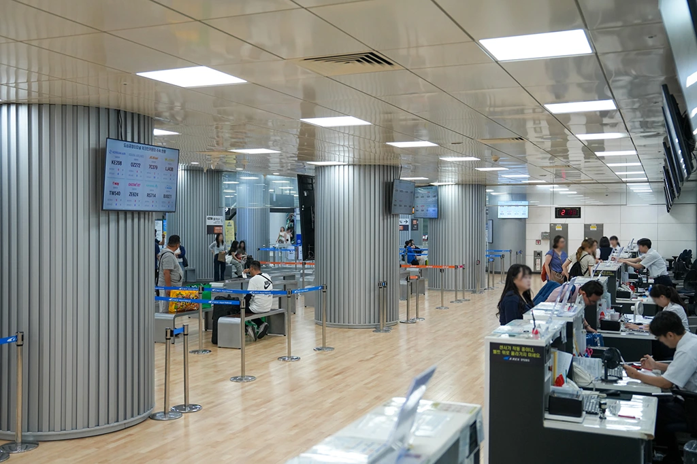
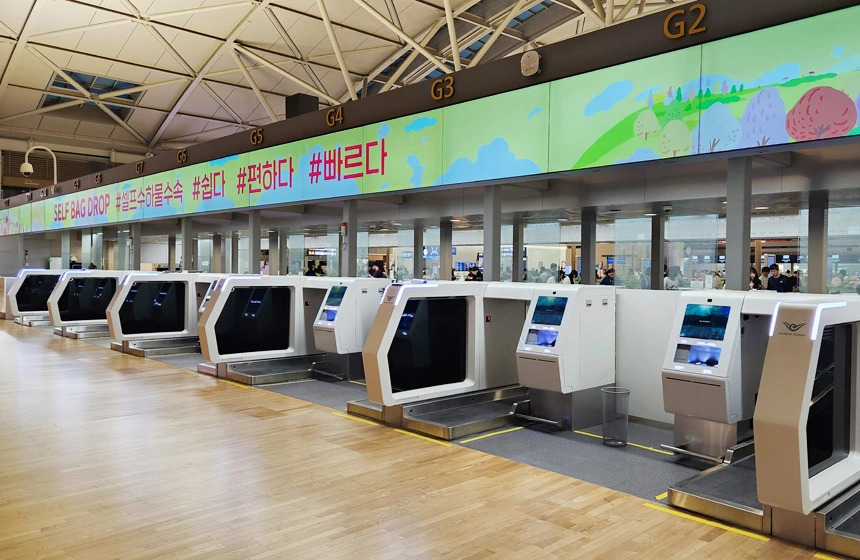

Guía de salida del aeropuerto de Incheon
Si tienes un vuelo internacional desde el aeropuerto de Incheon, procura llegar a la terminal de salida correcta unas tres horas antes del vuelo. Reserva más tiempo si tu aerolínea lo recomienda, llevas equipaje especial o tienes que tramitar una devolución de impuestos.
Después de dejar el hotel, quizá todavía te quede medio día para recorrer Seúl. El tiempo del que dispongas dependerá de tu vuelo, de dónde te alojes y de cómo vayas a llegar al aeropuerto.

Tu último día en Corea
Un vuelo a primera hora de la mañana y uno por la tarde-noche dejan posibilidades muy distintas para organizar tu último día en Corea.
Si vuelas temprano, prepara las maletas la noche anterior y organiza con antelación el transporte al aeropuerto. Puede que tengas poco margen entre la salida de tu alojamiento y la llegada al mostrador de facturación.
Con un vuelo por la tarde o por la noche, quizá aún puedas desayunar, hacer compras o dar un último paseo por Seúl. Pregunta al hotel si puedes dejar allí el equipaje después de hacer el check-out y elige una zona de la que puedas regresar sin tener que cruzar la ciudad con prisas.
Si tu vuelo reúne los requisitos de facturación en la terminal urbana de facturación de la estación de Seúl, quizá puedas dejar allí el equipaje facturado antes de continuar tu jornada por la ciudad.
Los pasos de tu salida de Corea
- Confirma el vuelo, la terminal de salida y la hora límite de facturación de la aerolínea.
- Deja el alojamiento y organiza la consigna de equipaje o, si cumples los requisitos, la facturación y el control de inmigración en la terminal urbana.
- Desplázate a la terminal correcta del aeropuerto.
- Completa la facturación, la entrega de equipaje y los trámites de aduanas que aún tengas pendientes.
- Pasa el control de seguridad del aeropuerto y el control de inmigración de salida si no has completado ya este último en la terminal urbana.
- Localiza tu puerta de embarque y prepárate antes de que termine el embarque.
Si vas a solicitar una devolución de impuestos en el aeropuerto, ten a mano las compras y los documentos correspondientes. Avisa al personal de la aerolínea de los artículos con derecho a devolución que lleves en el equipaje facturado antes de entregar definitivamente la maleta.
Organiza las últimas actividades en función de la hora a la que debes salir hacia el aeropuerto. Un vuelo nocturno puede darte varias horas más en Seúl, pero solo podrás aprovecharlas si cuentas con una forma fiable de llegar a tu terminal.
¿Terminal 1 o Terminal 2?
El aeropuerto de Incheon tiene dos terminales de pasajeros independientes. En ambas, las instalaciones de salidas internacionales están en la tercera planta, pero la distancia entre ellas es demasiado grande para ir a pie con el equipaje.
Confirma tu terminal de salida antes de elegir el autobús, el tren o un traslado privado.
Comprueba tu vuelo, no solo la aerolínea
Empieza por consultar el billete electrónico y comprueba qué aerolínea opera realmente tu vuelo. Es especialmente importante si has reservado un vuelo de código compartido a través de otra compañía.
Utiliza el buscador oficial de vuelos de salida del aeropuerto de Incheon para confirmar:
- Número de vuelo y hora de salida
- Terminal de salida
- Mostrador de facturación
- Puerta de embarque, cuando esté asignada
- Estado actual del vuelo
No des por hecho que saldrás de Corea por la misma terminal a la que llegaste. Vuelve a comprobar tu vuelo antes de salir del hotel.
¿Qué pasa si llegas a la terminal equivocada?
Si te bajas en la terminal equivocada, todavía puedes desplazarte entre la Terminal 1 y la Terminal 2 con el autobús lanzadera gratuito del aeropuerto o con el tren de pago Airport Railroad (AREX).
De la Terminal 1 a la Terminal 2
Toma el autobús lanzadera gratuito en el exterior de la salida 8 de la tercera planta de la Terminal 1.
De la Terminal 2 a la Terminal 1
Toma el autobús lanzadera gratuito en el exterior de la salida 7 de la tercera planta de la Terminal 2.
El tren del aeropuerto también conecta las dos terminales. Cuenta con el tiempo necesario para llegar a la estación, esperar el tren y volver a la planta de salidas con el equipaje.
Comprueba los horarios vigentes antes de depender de cualquiera de estos servicios para un vuelo de madrugada o nocturno.
Si se acerca la hora límite de facturación, contacta con la aerolínea mientras organizas el cambio de terminal. Llegar a la terminal correcta antes de que despegue el avión no significa necesariamente que aún puedas facturar.
¿Con cuánta antelación debes llegar al aeropuerto de Incheon?
El aeropuerto de Incheon recomienda llegar unas tres horas antes de un vuelo internacional. Toma como objetivo la hora de llegada a la terminal de salida correcta, no la hora a la que tu tren llega a la estación del aeropuerto.
La hora límite de facturación de la aerolínea es una cuestión distinta. Llegar justo antes de que cierre el mostrador deja muy poco margen para problemas con el equipaje, comprobaciones de documentación o retrasos inesperados.
Calcula hacia atrás a partir de la hora del vuelo
Parte de la hora de salida programada que figura en tu billete y calcula hacia atrás todo el trayecto.
- Resta el tiempo que quieres reservar en el aeropuerto, empezando por tres horas, para fijar la hora a la que debes llegar.
- Estima el trayecto completo desde el hotel hasta la sala de salidas, incluyendo los desplazamientos a pie, las esperas, los transbordos y el último tramo dentro de la terminal.
- Añade un margen razonable para posibles retrasos en el transporte.
- Fija la hora de salida del hotel antes de organizar las últimas visitas o compras.
Utiliza la calculadora de abajo para saber a qué hora debes salir de tu hotel, en lugar de seguir un horario fijo.
Si tienes previsto facturar en la terminal urbana de facturación de la estación de Seúl, organiza el día en función de su hora límite de facturación, que es anterior. Aun así, necesitarás tiempo suficiente para el trayecto en el tren exprés y los trámites pendientes en el aeropuerto.
Cuándo conviene reservar más tiempo
Tres horas son un punto de partida, no una garantía de que todos los trámites de salida duren lo mismo.
Valora reservar más tiempo si:
- Viajas con niños pequeños o con alguien que necesita asistencia.
- Llevas equipaje de gran tamaño, material deportivo o varias maletas.
- La aerolínea debe comprobar visados u otros documentos de viaje en el mostrador.
- Tienes que presentar a aduanas las compras por las que solicitas una devolución de impuestos.
- Se prevé una afluencia especialmente alta en el aeropuerto o mucho tráfico por carretera.
Tener una tarjeta de embarque en el móvil puede simplificar parte del proceso, pero no elimina necesariamente la entrega de equipaje o la comprobación de documentos. Aún tienes que pasar el control de seguridad, completar el control de inmigración de salida y llegar a la puerta de embarque.
Consulta la previsión de afluencia del aeropuerto antes del día de salida y la información en tiempo real de la sala de salidas ese mismo día. Estos servicios ayudan a anticipar los periodos de mayor afluencia, pero no garantizan cuánto tardarás tú en completar los trámites.
Si tu aerolínea recomienda llegar con más antelación, sigue sus indicaciones.
Consulta la previsión de afluencia del aeropuerto
Consulta los tiempos de espera en salidas en tiempo real
Calculadora de hora de salida
¿A qué hora debes salir hacia el aeropuerto de Incheon?
Introduce los datos de tu vuelo y la duración estimada del trayecto para calcular cuándo salir de tu alojamiento. Indica la fecha y la hora del vuelo en el horario de Corea (KST).
Para un vuelo a primera hora de la mañana, comprueba si el transporte público empieza a funcionar con tiempo suficiente para llegar al aeropuerto a la hora prevista. Si no es así, organiza un taxi o traslado privado, o plantéate pasar la última noche más cerca del aeropuerto.
Si tu vuelo sale poco después de medianoche, recuerda que quizá tengas que iniciar el trayecto al aeropuerto el día anterior.
Salida del hotel y consigna de equipaje
Pueden quedar varias horas entre el check-out de tu alojamiento y la salida de Seúl hacia el aeropuerto de Incheon. El lugar donde dejes la maleta puede determinar cuánto tiempo disfrutas realmente de esas horas.
Elige una consigna que encaje con tus últimas visitas y con el trayecto al aeropuerto. Ahorrar un poco en el precio de la consigna rara vez compensa tener que cruzar Seúl innecesariamente para recuperar el equipaje.
Dejar el equipaje en el hotel
Si el hotel permite dejar el equipaje después del check-out y tienes pensado pasar el tiempo restante por la zona, dejar las maletas en recepción suele ser lo más sencillo.
Pregunta al hotel con antelación:
- ¿Puedes dejar el equipaje después del check-out?
- ¿Hay que pagar por guardarlo?
- ¿Hasta qué hora puedes recogerlo?
- ¿Habrá personal en recepción cuando vuelvas?
No des por hecho que un apartamento, una pensión o un alojamiento con check-in autónomo ofrece el mismo servicio que un hotel con personal.
Si tus últimas actividades te llevan a otra zona de Seúl, valora si regresar al hotel con las bolsas de las compras antes de ir al aeropuerto supone un desplazamiento innecesario.
Lleva contigo el pasaporte, la medicación, el móvil, la batería externa y todo lo que puedas necesitar antes del vuelo.
Servicios de consigna y envío de equipaje
En Seúl hay varias alternativas si tu alojamiento no puede guardar las maletas o si prefieres recogerlas más cerca del punto desde el que partirás hacia el aeropuerto.
Taquillas en estaciones de metro — T-Locker
Hay taquillas en muchas estaciones de metro de Seúl. Las dimensiones publicadas van de 50 × 30 × 60 cm a 50 × 90 × 60 cm.
Las tarifas habituales de cuatro horas en días laborables oscilan entre ₩2,200 y ₩4,400, con precios más altos los fines de semana. Si dejas el equipaje más tiempo, se aplican cargos adicionales.
Puedes depositar y recoger el equipaje entre las 05:00 y la medianoche. En las taquillas de Seoul Metro puedes escanear el código QR y utilizar el servicio web sin instalar la aplicación T-Locker ni crear una cuenta.
Comprueba que haya una taquilla disponible en la que quepa tu maleta, incluidas las ruedas y las asas. Los métodos de pago y las instrucciones pueden variar según la ubicación.

Consigna de equipaje con personal — T-Luggage
T-Luggage dispone de consignas atendidas por personal en estaciones importantes, entre ellas la estación de Seúl, Hongik University, Myeongdong y Jamsil.
Las tarifas publicadas para cuatro horas de consigna oscilan entre ₩3,000 y ₩13,000, según el tamaño de la maleta y el día de la semana.
Los mostradores de T-Luggage de la estación de Seúl, Hongik University, Myeongdong y Jamsil abren de 09:00 a 22:00. Si tienes que recoger el equipaje antes de las 09:00, organiza otra opción de consigna.
La estación de Seúl y la estación de Hongik University merecen especial atención si tienes previsto utilizar AREX para llegar al aeropuerto.
En la estación de Seúl, el mostrador de T-Luggage próximo a la salida 1 se encuentra en la zona del metro. Reserva tiempo para recoger las maletas y desplazarte hasta la zona de salidas de AREX.

Consignas de equipaje independientes
Las consignas comerciales son otra opción cuando las taquillas de las estaciones están llenas o necesitas un horario de apertura más amplio.
LuggageDot, cerca de la estación de Seúl, ofrece acceso las 24 horas y taquillas para maletas de hasta 32 pulgadas. Está a unos 287 metros de la salida 12 y las tarifas parten de ₩1,000 por hora. El terminal de autoservicio está disponible en inglés y admite pagos con tarjeta.
Comprueba la disponibilidad, las opciones de pago y el lugar exacto de recogida antes de cerrar tu itinerario final.
Enviar el equipaje al aeropuerto de Incheon
T-Luggage también ofrece entregas en el aeropuerto el mismo día desde los puntos de recogida admitidos. Así puedes recorrer Seúl con más libertad sin tener que volver a una consigna.
Sin embargo, el servicio tiene horas límite de entrega por la mañana y franjas de recogida en el aeropuerto por la tarde. No te conviene si necesitas recoger la maleta antes de la hora de entrega confirmada para poder tomar tu vuelo.
Antes de reservar, confirma la terminal de salida, la hora límite para entregar el equipaje, la primera hora de recogida confirmada y el mostrador del aeropuerto donde debes recogerlo.
El envío de equipaje al aeropuerto no sustituye a la facturación de la aerolínea. Tienes que recoger tu maleta y completar los trámites que exige la compañía.
Si llevas en la maleta compras que podrían requerir una inspección de aduanas para la devolución de impuestos, asegúrate de poder recuperarlas y presentarlas antes de completar la entrega del equipaje.
Consulta los servicios de consigna y envío de T-Luggage
Cómo aprovechar las últimas horas
Tu último itinerario debe seguir la ruta hacia el aeropuerto, en lugar de obligarte a ir de un lado a otro de Seúl.
Si te alojas en Hongdae y vas a tomar un tren AREX con paradas, pasar las últimas horas por Hongdae o Yeonnam te permite recoger el equipaje cerca de la estación.
Si tienes previsto tomar el tren exprés AREX desde la estación de Seúl, guardar el equipaje cerca de la estación puede permitirte terminar las visitas en otra zona sin volver al alojamiento original.
Los viajeros que pueden utilizar la terminal urbana de facturación de la estación de Seúl tienen otra opción: facturar y entregar el equipaje antes de continuar su jornada por la ciudad.
Si tienes un vuelo temprano o queda poco tiempo entre el check-out y la salida hacia el aeropuerto, evita las gestiones adicionales de consigna y ve directamente al aeropuerto.
Utiliza la calculadora de hora de salida anterior para establecer a qué hora debes iniciar el trayecto al aeropuerto. Calcula después hacia atrás para dejar tiempo suficiente para recoger el equipaje antes de salir.
Terminal urbana de facturación de la estación de Seúl
Si tu vuelo sale por la tarde o por la noche, quizá puedas entregar la maleta en la estación de Seúl por la mañana, pasar el tiempo restante en la ciudad sin el equipaje facturado y tomar más tarde el tren exprés AREX al aeropuerto de Incheon.
La terminal urbana de facturación (City Airport Terminal) está en la planta B2 de la zona de Airport Railroad de la estación de Seúl. Ofrece facturación, entrega de equipaje y control de inmigración de salida a los viajeros que cumplen los requisitos.

¿Quién puede utilizar la terminal urbana de facturación?
Antes de organizar tu último día en torno a este servicio, asegúrate de cumplir los tres requisitos:
- Tienes un vuelo internacional desde el aeropuerto de Incheon ese mismo día.
- La aerolínea que opera tu vuelo y el propio vuelo están admitidos en el servicio de facturación de la terminal urbana.
- Tienes un billete de tren exprés AREX desde la estación de Seúl hasta el aeropuerto de Incheon.
Un billete del tren con paradas o una tarjeta T-money por sí solos no te dan derecho a utilizar este servicio.
| Aerolínea operadora | Terminal del aeropuerto | Vuelos admitidos |
|---|---|---|
| Jeju Air (7C) | T1 | Se excluyen las rutas a América, Guam y Saipán |
| Trinity Airways (antes T'way Air) (TW) | T1 | Se excluyen las rutas a América, Guam y Saipán. Se admiten vuelos de código compartido operados por Trinity Airways. |
| Eastar Jet (ZE) | T1 | Rutas operadas por Eastar Jet |
| Korean Air (KE) | T2 | Incluye vuelos de código compartido operados por Korean Air |
| Asiana Airlines (OZ) | T2 | Incluye vuelos de código compartido operados por Asiana |
| Jin Air (LJ) | T2 | Se excluyen las rutas a América, Guam y Saipán. Se admiten vuelos de código compartido operados por Jin Air. |
| Air Busan (BX) | T2 | Incluye vuelos de código compartido operados por Air Busan |
| Air Seoul (RS) | T2 | Se excluyen las rutas a América, Guam y Saipán. Se admiten vuelos de código compartido operados por Air Seoul. |
La aerolínea que figura en tu billete puede ser distinta de la que opera el vuelo. Comprueba la compañía operadora y confirma que puedes utilizar el servicio antes de desplazarte a la estación de Seúl.
La terminal urbana no admite equipaje de más de 150 cm de longitud. También se aplican otras restricciones de dimensiones, peso y manipulación. Si viajas con material deportivo, instrumentos musicales u otro equipaje de gran tamaño, consulta las limitaciones de tu aerolínea para la terminal urbana antes de ir a la estación de Seúl.
Los viajeros con mascotas o necesidades de asistencia especial deben consultar directamente a su aerolínea.
Consulta las aerolíneas admitidas y las condiciones vigentes del servicio
Facturación y control de inmigración de salida
-
Paso 1 — Compra el billete del tren exprés AREX
Compra el billete por internet o en las máquinas de la planta B2 de la estación de Seúl. Utiliza el código QR del billete para acceder a la zona de facturación de la terminal urbana.
Elige una hora de salida del tren que encaje con tus planes y te deje tiempo suficiente en el aeropuerto de Incheon.
-
Paso 2 — Factura y entrega el equipaje
Acude al mostrador de tu aerolínea con el pasaporte y los datos del vuelo. Completa la facturación, recoge tu tarjeta de embarque y entrega el equipaje facturado.
Antes de salir de la zona de facturación, espera a que el personal confirme que tu maleta ha superado el control de equipajes.
El equipaje facturado se enviará para tu vuelo. Normalmente no tendrás que volver a recogerlo en el aeropuerto de Incheon.
Antes de entregar la maleta
Si vas a solicitar una devolución de impuestos en el aeropuerto de Incheon, es posible que aduanas tenga que inspeccionar los productos comprados.
Lleva contigo esos artículos si están permitidos en el equipaje de mano. Si tienen que ir en el equipaje facturado y pueden requerir una inspección, plantéate facturar la maleta en el aeropuerto de Incheon.
Guarda el pasaporte, la tarjeta de embarque, la medicación, los objetos de valor y la batería externa en el equipaje de mano.
-
Paso 3 — Completa el control de inmigración de salida
Lleva el pasaporte y la tarjeta de embarque al mostrador de inmigración de esa misma planta.
Completar aquí tanto el control de inmigración de salida como la facturación te permite utilizar el acceso de salida reservado a los usuarios de la terminal urbana en el aeropuerto de Incheon.
Horarios y horas límite de facturación
| Servicio | Horario o plazo límite |
|---|---|
| Facturación y entrega de equipaje | 05:20–19:00 |
| Última admisión para facturar | 18:50 |
| Control de inmigración de salida | 05:30–19:00 |
| Facturación completada para la Terminal 1 | 3 horas antes del vuelo |
| Facturación completada para la Terminal 2 | 3 horas y 20 minutos antes del vuelo |
La hora límite correspondiente a tu vuelo es aquella en la que debes haber terminado de facturar, no la hora a la que debes llegar a la estación de Seúl.
Calcula hacia atrás desde la hora de salida de tu vuelo y añade tiempo para llegar a la terminal urbana, esperar en el mostrador y completar el control de inmigración.
También tienes que llegar antes de la última hora de admisión de la terminal urbana.
Si tu vuelo sale poco después de medianoche, no des por hecho que puedes facturar en la estación de Seúl el día anterior. Confirma si cumples los requisitos con la aerolínea, ya que el servicio está pensado para salidas en el mismo día.
Para algunos vuelos de madrugada, la terminal urbana abre demasiado tarde para cumplir la hora límite de facturación. En ese caso, ve directamente al aeropuerto de Incheon.
De la estación de Seúl al aeropuerto de Incheon
El tren exprés AREX sale de la planta B7. Sigue las señales de Express Train y reserva tiempo suficiente para llegar al andén desde la planta B2.
| Destino | Duración del trayecto en tren exprés |
|---|---|
| Terminal 1 del aeropuerto de Incheon | 43 minutos |
| Terminal 2 del aeropuerto de Incheon | 51 minutos |
Estos tiempos corresponden únicamente al trayecto en tren. Incluye en tu planificación la espera en la estación de Seúl y el recorrido a pie desde la estación del aeropuerto hasta la sala de salidas.
Al llegar al aeropuerto de Incheon, dirígete a la sala de salidas de la planta 3 (3F) y sigue las señales del acceso de salida reservado a los usuarios de la terminal urbana de facturación.


Ten a mano el pasaporte y la tarjeta de embarque.
Aún tienes que pasar el control de seguridad y llegar a la puerta antes de que termine el embarque. Facturar en la terminal urbana no te exime de los controles de seguridad.
¿Merece la pena utilizar la terminal urbana de facturación?
Si el itinerario de tu último día pasa por la estación de Seúl, tu vuelo cumple los requisitos y vas a viajar en el tren exprés, facturar pronto puede darte varias horas en Seúl sin tener que llevar la maleta.
En cambio, si te alojas cerca de otra estación de AREX, vas a viajar en autobús al aeropuerto o llevas equipaje que necesita una manipulación especial, pasar por la estación de Seúl puede añadir un desplazamiento innecesario.
Si te alojas en Hongdae y vas directamente al aeropuerto de Incheon en un tren AREX con paradas, desplazarte expresamente a la estación de Seúl solo para facturar podría hacerte perder más tiempo del que ahorras.
Cómo llegar al aeropuerto de Incheon desde Seúl
La zona en la que te alojas en Seúl importa más que la velocidad del tren al aeropuerto. Si estás cerca de una estación de AREX, el tren puede ser la forma más sencilla de llegar a Incheon. Si te alojas cerca de una parada de autobús al aeropuerto en Myeongdong o Gangnam, el autobús puede ahorrarte el esfuerzo de llevar las maletas por varias estaciones de metro.
Antes de elegir el transporte, ten en cuenta cuánto equipaje llevas, cuánto tendrás que caminar y a qué hora necesitas llegar a la terminal de salida.
AREX: tren exprés y tren con paradas
El tren exprés AREX va directamente de la estación de Seúl al aeropuerto de Incheon. Tiene asientos reservados y requiere un billete específico, que puedes comprar por internet o en la estación.
El tren con paradas (All-Stop Train) pasa por Gongdeok, Hongik University, Digital Media City y otras estaciones de la línea del aeropuerto. Puedes viajar con una tarjeta T-money o comprar un billete de un solo uso.
| Tren exprés | Tren con paradas | |
|---|---|---|
| Terminal 1 | 43 minutos | 59 minutos |
| Terminal 2 | 51 minutos | 66 minutos |
| Tarifa de adulto a T1 | ₩13,000 | ₩4,750 |
| Tarifa de adulto a T2 | ₩13,000 | ₩5,350 |
| Asientos | Con reserva | Sin reserva |
Las tarifas indicadas del tren con paradas corresponden al pago con tarjeta de transporte. Algunos trenes tardan unos minutos más.
Si te alojas en Hongdae o Gongdeok, toma el tren con paradas directamente al aeropuerto. La tarifa de adulto desde cualquiera de las dos estaciones es de ₩4,650 hasta la Terminal 1 o ₩5,250 hasta la Terminal 2. Volver a la estación de Seúl solo para tomar el tren exprés suele añadir tiempo y esfuerzo innecesarios.
Comprueba el destino que indica el tren antes de subir. Algunos servicios con paradas terminan en Geomam en lugar de continuar hasta el aeropuerto de Incheon.
En la estación de Seúl, reserva tiempo para llegar a la zona de AREX, sobre todo si llegas en metro o KTX. La zona de venta de billetes del tren exprés está en la planta B2 y el andén, en la B7.
Si has facturado en la terminal urbana de facturación de la estación de Seúl, tienes que viajar en el tren exprés.
Consulta los horarios del tren exprés AREX
Consulta las tarifas del tren con paradas
Autobús Airport Limousine
Un autobús Airport Limousine puede ahorrarte bastante camino a pie si hay una parada adecuada cerca de tu alojamiento. Las maletas grandes viajan en el maletero, así que no tienes que llevarlas por estaciones de metro ni cambiar de tren.
Entre las líneas habituales de autobús al aeropuerto se incluyen:
- 6001 y 6015: Myeongdong y zonas cercanas del centro de Seúl — ₩17,000 por adulto.
- 6002: Hongdae y otras paradas del centro de Seúl — ₩17,000 por adulto.
- 6103: servicio directo desde COEX City Airport al aeropuerto de Incheon — ₩18,000 por adulto.
Comprueba la ubicación exacta de la parada en dirección al aeropuerto. Puede estar en el lado opuesto de la calle respecto a la parada donde bajaste al llegar a Seúl.
En las líneas de Airport Limousine como la 6002 y la 6015, se sube por orden de llegada y se paga con tarjeta de transporte o en efectivo. Si el autobús está lleno, es posible que tengas que esperar al siguiente.
Otros servicios funcionan de forma distinta. El autobús 6103 desde COEX, por ejemplo, admite reservas anticipadas.
Indica al conductor si sales de la Terminal 1 o de la Terminal 2 antes de que cargue tu equipaje.
El tráfico puede alargar considerablemente el trayecto. Si viajas en un periodo de mucha circulación, sal con más margen o valora el tren si puedes llegar fácilmente a una estación de AREX.
Líneas y horarios de Airport Limousine
Autobús 6103 al aeropuerto desde COEX
Taxi
Un taxi te lleva directamente desde el alojamiento hasta la sala de salidas, sin transbordos en estaciones ni desplazamientos a pie hasta una parada.
Si sois dos o tres viajeros y compartís el coste, el suplemento puede compensar cuando lleváis varias maletas o tendríais que hacer varios transbordos de metro.
Los taxis normales de Seúl funcionan con taxímetro; los peajes de autopista y los recargos aplicables influyen en el precio final.
El servicio International Taxi de Seúl también ofrece tarifas fijas para los traslados al aeropuerto. Las tarifas publicadas para un vehículo estándar oscilan entre ₩70,000 y ₩95,000, según el distrito.
No des por hecho que cuatro pasajeros y cuatro maletas grandes caben en un taxi estándar. Comprueba la capacidad para equipaje o solicita un vehículo más grande con antelación.
Pide al hotel que te consiga un taxi o utiliza un servicio de reserva de taxis. Asegúrate de que el conductor conoce tu terminal de salida correcta.
Consulta las tarifas y reservas de International Taxi
Traslado privado reservado con antelación
Vale la pena valorar un traslado privado reservado con antelación si viajas con niños, varias maletas grandes o un grupo que necesita un vehículo de mayor tamaño.
También puede ser útil si tienes que salir de tu alojamiento antes de que empiece a funcionar el transporte público habitual.
Antes de reservar, confirma:
- Dirección del hotel y hora de recogida.
- Terminal de salida en el aeropuerto de Incheon.
- Número y tamaño de las maletas que realmente caben en el vehículo.
- Disponibilidad de sillas infantiles, si las necesitas.
- Si están incluidos los peajes, los gastos de aparcamiento y los recargos por viajes de madrugada o por la noche.
- Condiciones de cancelación y tiempo de espera.
Asegúrate de elegir el trayecto de Seúl al aeropuerto de Incheon al reservar. Un traslado contratado para llegadas al aeropuerto puede no incluir la recogida en tu hotel.
Con un traslado privado no tienes que buscar transporte el día de salida, pero el tráfico sigue afectando al trayecto. Utiliza la calculadora de hora de salida anterior para fijar la hora de recogida, con un margen adecuado para los retrasos.
Vuelos de madrugada y nocturnos
Llegar al aeropuerto de Incheon fuera del horario habitual del transporte público requiere algo más de planificación. Seúl dispone de autobuses nocturnos al aeropuerto, pero los trenes y los autobuses regulares no funcionan las 24 horas.
Comprueba a qué hora necesitas llegar al aeropuerto antes de decidir si pasas la última noche en Seúl o más cerca del aeropuerto.
Vuelos a primera hora de la mañana
Si tu vuelo sale a las 08:00, llegar tres horas antes supone estar en el aeropuerto a las 05:00. Esperar al primer tren AREX desde la estación de Seúl ya te haría llegar más tarde de lo previsto.
El primer tren con paradas sale de la estación de Seúl a las 05:20. El primer tren exprés sale a las 06:00 y llega a la Terminal 1 a las 06:43 y a la Terminal 2 a las 06:51.
Dependiendo de tu vuelo y del lugar donde te alojes, quizá puedas tomar uno de los primeros autobuses regulares al aeropuerto. Consulta la hora de paso por la parada donde realmente vas a subir, no solo la hora de inicio del recorrido.
| Línea | Principales zonas por las que pasa | Tarifa de adulto |
|---|---|---|
| N6000 | Gangnam Express Bus Terminal, Heukseok, Yeomchang, Songjeong | ₩17,000 |
| N6002 | Cheongnyangni, Dongdaemun, Gwanghwamun, Hongdae | ₩17,000 |
| N6701 | Dongdaemun Design Plaza, Myeongdong, estación de Seúl, Mapo | ₩18,000 |
| N6703 | Gwangnaru, Gangbyeon, Jamsil, Samseong, Banpo | ₩18,000 |
La tarifa de adulto de la línea N6000 desde la estación de Songjeong hasta el aeropuerto de Incheon es de ₩10,000.
Las cuatro líneas llegan a las dos terminales del aeropuerto.
En las líneas N6000 y N6002 se admite el pago en efectivo o con T-money al subir en Seúl. Para N6701 y N6703, comprueba las opciones vigentes de billetes y pago del operador.
Los autobuses nocturnos pasan con menos frecuencia que los diurnos. Consulta el horario de tu parada y deja margen suficiente por si no puedes subir al autobús previsto.
Consulta los horarios de autobuses nocturnos a la Terminal 1
Consulta los horarios de autobuses nocturnos a la Terminal 2
Cuándo merece la pena valorar un taxi o un hotel cerca del aeropuerto
Si no hay un autobús nocturno que te venga bien cerca de tu alojamiento, organiza un taxi o traslado privado la noche anterior.
Para una familia con niños pequeños, trasladarse a un hotel de la zona del aeropuerto la última tarde puede ser más cómodo que despertar a todo el mundo de madrugada para hacer el trayecto desde Seúl.
Antes de reservar un hotel cerca del aeropuerto, confirma cómo llegarás a tu terminal de salida. Es posible que la lanzadera del hotel no funcione lo bastante temprano para tu vuelo. Además, alojarte cerca del aeropuerto no significa necesariamente que puedas llegar a la terminal a pie.
Vuelos a última hora de la noche y después de medianoche
Es fácil confundir la fecha de un vuelo que sale poco después de medianoche. Si tu billete indica las 00:30 del martes, normalmente tendrás que ir al aeropuerto el lunes por la noche.
Si tienes un vuelo nocturno, quizá puedas pasar la mayor parte de tu último día en Seúl y tomar un tren o un autobús regular al aeropuerto.
El último tren exprés AREX sale de la estación de Seúl a las 23:00. El último tren con paradas que continúa hasta el aeropuerto de Incheon sale a las 23:40. Los servicios posteriores con paradas pueden terminar en Geomam.
Son horarios de salida del transporte, no horas recomendadas para salir hacia tu vuelo. Calcula hacia atrás a partir de la hora programada del vuelo y de la hora a la que necesitas llegar al aeropuerto.
Consulta los horarios de las estaciones de AREX
Si tienes previsto pasar varias horas de noche en el aeropuerto, comprueba cuándo abre el mostrador de facturación de tu aerolínea. Quizá tengas que esperar en la zona pública con tu equipaje antes de acceder a la zona de salidas.
Los restaurantes, las tiendas y los demás servicios del aeropuerto tienen sus propios horarios. No des por hecho que todos estarán disponibles durante toda la noche.
Utiliza la calculadora de hora de salida para establecer la fecha y hora a la que debes salir antes de organizar tu última noche de hotel, la recogida de equipaje o el transporte al aeropuerto.
Facturación y entrega de equipaje
Cuando llegues a la terminal correcta del aeropuerto de Incheon, dirígete a la sala de salidas de la tercera planta. Consulta en las pantallas de información de vuelos el mostrador de facturación de tu aerolínea.
Si ya has facturado y completado el control de inmigración de salida en la terminal urbana de facturación de la estación de Seúl, sigue en su lugar las señales del acceso de salida reservado a sus usuarios.
Facturación en línea o en el aeropuerto
Hacer el check-in en línea antes de salir del alojamiento puede ahorrarte tiempo en el aeropuerto. Quizá puedas elegir asiento y recibir una tarjeta de embarque en el móvil a través de la web o la aplicación de tu aerolínea.
El siguiente paso depende de tu equipaje y de tus documentos de viaje.
- Si tienes una tarjeta de embarque válida, solo llevas equipaje de mano y no queda ninguna comprobación de documentos pendiente, por lo general puedes dirigirte al control de seguridad tras completar los trámites de aduanas necesarios.
- Si tienes equipaje para facturar, acude al mostrador de entrega de equipaje de tu aerolínea o a una máquina de entrega de equipaje de autoservicio que puedas utilizar.
- Si la aerolínea necesita comprobar tu pasaporte, visado u otros documentos de viaje, acude a un mostrador de facturación atendido por personal.
Hay terminales de autoservicio en las dos terminales del aeropuerto. Sin embargo, algunas aerolíneas, destinos y categorías de pasajeros no admiten la facturación de autoservicio.
Entrega de equipaje y plazos de la aerolínea
Comprueba tu franquicia de equipaje antes de llegar al aeropuerto. El peso, las dimensiones y el número de bultos permitidos dependen de tu aerolínea y de tu billete.
Un billete en clase económica no incluye necesariamente equipaje facturado, especialmente si viajas con una aerolínea de bajo coste.
El aeropuerto de Incheon también dispone de instalaciones de entrega de equipaje de autoservicio para los pasajeros que reúnen los requisitos. El límite general publicado por el aeropuerto es una longitud inferior a 90 cm por bulto, con condiciones adicionales según la aerolínea.

Si llevas equipaje de gran tamaño, material deportivo o tienes que pagar un suplemento por exceso de equipaje, comprueba si necesitas acudir a un mostrador atendido por personal.
Las horas límite de facturación y entrega de equipaje de tu aerolínea son distintas de la hora programada de salida del vuelo. Comprueba esos plazos antes de salir del alojamiento, aunque ya tengas la tarjeta de embarque en el móvil.
Consulta la disponibilidad de facturación y entrega de equipaje de autoservicio
Antes de entregar la maleta
Dedica un momento a comprobar qué llevas dentro de la maleta antes de que se vaya por la cinta de equipajes.
Lleva contigo estos artículos:
- Pasaporte, tarjeta de embarque y documentos de viaje necesarios.
- Medicación que puedas necesitar durante el trayecto.
- Dinero, objetos de valor y artículos personales imprescindibles.
- Baterías externas y baterías de litio de repuesto permitidas en cabina.
- Documentos para la devolución de impuestos y las compras que deban seguir disponibles para una inspección de aduanas.
Si llevas en la maleta que vas a facturar productos por los que todavía tienes que solicitar una devolución de impuestos, avisa al personal de la aerolínea antes de completar la entrega de equipaje.
El personal podrá indicarte los trámites correctos de aduanas y de entrega de equipaje.
Conserva el resguardo de facturación del equipaje y sigue las instrucciones de la aerolínea sobre cualquier control adicional del equipaje.
Una vez aceptada la maleta, recuperarla puede resultar difícil y retrasar tu salida.
Devolución de impuestos antes de salir de Corea
Si has dedicado parte de tu viaje a comprar cosméticos, ropa u otros productos, comprueba antes de salir de Corea si te queda alguna devolución de impuestos pendiente.
Lo importante en el aeropuerto de Incheon es saber si todavía tienes que completar las comprobaciones de aduanas, cobrar la devolución o ambas cosas.
Devolución inmediata o devolución en el aeropuerto
No todas las compras con devolución de impuestos requieren otra visita a un mostrador de devolución en el aeropuerto.
Devolución inmediata de impuestos
En los comercios participantes, los viajeros que cumplan los requisitos pueden presentar el pasaporte y obtener la reducción de impuestos en el momento de pagar.
Las condiciones de compra son las siguientes:
- Al menos ₩15,000 por operación.
- Menos de ₩1,000,000 por operación.
- Un máximo total de ₩5,000,000 en compras con devolución inmediata durante el viaje.
Si ya te han descontado los impuestos al pagar la compra, no puedes solicitar de nuevo esa misma devolución en el aeropuerto.
Devolución de impuestos ordinaria
Pagas el precio completo en un comercio participante y recibes la documentación para la devolución. Después puedes solicitar la devolución correspondiente a través de un servicio autorizado.
Para la mayoría de los visitantes internacionales, los requisitos incluyen una estancia en Corea inferior a seis meses y sacar los productos del país dentro de los tres meses siguientes a la compra. Los productos deben seguir nuevos, sin usar y sin abrir.
Si ya recibiste un anticipo de la devolución en un punto de devolución del centro de la ciudad, comprueba si todavía tienes que completar la verificación de exportación en el aeropuerto.
Conserva los recibos y los documentos de devolución hasta terminar el proceso.
Consulta los requisitos y las condiciones de devolución de impuestos en Corea
Devolución de impuestos de compras en el equipaje facturado
Si tu maleta contiene compras con devolución de impuestos que no pueden ir en el equipaje de mano, como productos de cuidado de la piel de tamaño normal, completa los trámites de aduanas necesarios antes de que se lleven la maleta.
-
Paso 1 — Avisa a tu aerolínea al facturar
Explica que la maleta que vas a facturar contiene productos por los que debes completar los trámites de devolución de impuestos.
La aerolínea puede etiquetar la maleta y devolvértela temporalmente para realizar los trámites de aduanas.
-
Paso 2 — Utiliza el terminal de devolución de impuestos
Acude a uno de los terminales de autoservicio para la devolución de impuestos en la sala pública de salidas de la tercera planta. Sigue las instrucciones de la pantalla para registrar tu pasaporte y los documentos de devolución.
El terminal te indicará si tus compras requieren una inspección de aduanas.

-
Paso 3 — Completa la inspección de aduanas si es necesaria
Si te indican que vayas al mostrador de aduanas, presenta el pasaporte, los documentos de devolución y los productos correspondientes.
Ten esos artículos a mano en lugar de guardarlos debajo del resto del equipaje de la maleta.
-
Paso 4 — Entrega el equipaje facturado
Sigue las instrucciones del personal del aeropuerto. Tras completar las comprobaciones necesarias, podrás entregar la maleta en la cinta de equipajes designada cerca del mostrador de aduanas.
Después puedes pasar el control de seguridad y el control de inmigración de salida antes de cobrar cualquier devolución pendiente en la zona de embarque.
Devolución de impuestos de compras en el equipaje de mano
Si tus compras están permitidas en cabina, puedes llevarlas contigo durante los trámites de aduanas.
Una vez obtenida la tarjeta de embarque, acude a un terminal de devolución de impuestos de la sala pública de salidas. Si el terminal indica que hace falta una inspección de aduanas, lleva los productos y los documentos al mostrador de aduanas.
No des por hecho que un justificante de devolución de impuestos te permite pasar el control de seguridad con envases de líquidos que superen los límites.
Por ejemplo, un envase de 200 ml de un producto coreano de cuidado de la piel comprado en un comercio normal con devolución de impuestos sigue sujeto a las restricciones de líquidos en el equipaje de mano de los vuelos internacionales.
Si tienes previsto llevar esas compras en la maleta facturada, sigue el procedimiento de devolución para equipaje facturado antes de entregar la maleta.
Cobrar la devolución
Completar las comprobaciones de aduanas o del terminal de autoservicio no significa necesariamente que ya hayas cobrado la devolución.
Sigue las instrucciones del sistema de devolución y comprueba si necesitas cobrar en efectivo o completar la devolución a la tarjeta en un mostrador o terminal de autoservicio de la zona de embarque.
| Terminal | Ubicación | Horario del mostrador con personal | Terminal de autoservicio |
|---|---|---|---|
| Terminal 1 | 3F, cerca de la puerta 28 | 07:00–22:00 | 24 horas |
| Edificio de embarque (Concourse) | 3F, cerca de la farmacia central | — | 24 horas |
| Terminal 2 | 3F, cerca de las puertas 249 y 270, según el directorio de instalaciones del aeropuerto | 07:00–21:30, según el directorio | Confirma con tu proveedor de devolución |
La guía de devolución de impuestos del aeropuerto, por separado, indica en cambio la puerta 253. Confirma con tu proveedor de devolución el punto de cobro en la zona de embarque y sus horarios.
La Terminal 2 también dispone de terminales de devolución de impuestos las 24 horas cerca de los mostradores de facturación F y G, en la sala pública de salidas. Son instalaciones distintas de las de cobro de devoluciones situadas después del control de seguridad y del control de inmigración de salida.
Las instalaciones de cobro indicadas se encuentran después del control de seguridad y del control de inmigración de salida.
Según el servicio de devolución, quizá puedas cobrar en efectivo o recibir el abono en tu tarjeta. Comprueba las opciones disponibles antes de finalizar la operación.
Que un terminal funcione las 24 horas no significa que las inspecciones de aduanas con personal o la asistencia para la devolución estén disponibles a cualquier hora.
Si tienes un vuelo de madrugada o nocturno, o varias compras que puedan requerir una inspección, reserva más tiempo para la devolución.
No dejes la devolución para los últimos minutos antes de embarcar.
Consulta los trámites y puntos de devolución de impuestos del aeropuerto de Incheon
Control de seguridad
Después de completar la facturación, la entrega de equipaje y los trámites de aduanas necesarios, dirígete a la zona de control de seguridad.
Ten a mano el pasaporte y la tarjeta de embarque. Coloca tus pertenencias en las bandejas del control y sigue las indicaciones del personal del aeropuerto.
Las instalaciones actuales de control de seguridad del aeropuerto de Incheon permiten, por lo general, dejar los ordenadores portátiles y las tabletas dentro de la bolsa. Aun así, el personal puede pedirte que saques algún artículo o realizar comprobaciones adicionales.
Líquidos, cosméticos y artículos de aseo
Los vuelos internacionales que salen del aeropuerto de Incheon están sujetos a restricciones de líquidos, aerosoles y geles en el equipaje de mano.
| Artículo | Requisito para el equipaje de mano |
|---|---|
| Cada envase de líquido | 100 ml o menos |
| Bolsa transparente con cierre reutilizable | Capacidad máxima de 1 litro |
| Número de bolsas | Una por pasajero |
La restricción se aplica a la capacidad del envase, no a la cantidad de líquido que quede dentro.
Por tanto, un envase de 200 ml medio vacío sigue siendo demasiado grande para llevarlo en el equipaje de mano ordinario.
Algunos productos que se suelen comprar en Corea y que están sujetos a estas restricciones son:
- Tónicos, lociones y productos líquidos para el cuidado de la piel.
- Protectores solares, cremas y brillos de labios.
- Perfumes, champús y pasta de dientes.
- Kimchi, gochujang y otros alimentos que contengan líquidos o pastas.
Guarda los envases de mayor tamaño en el equipaje facturado cuando esté permitido.
Puede haber excepciones para los medicamentos líquidos necesarios y la comida para bebés. Comprueba las condiciones aplicables antes de viajar.
Los líquidos comprados en tiendas libres de impuestos pueden estar permitidos dentro de una bolsa de seguridad precintada y homologada para compras duty-free. Mantén la bolsa cerrada hasta embarcar en tu último vuelo y comprueba las normas de cualquier aeropuerto de conexión.
Las compras en comercios normales con devolución de impuestos no quedan automáticamente incluidas en esta excepción.
Baterías externas y baterías de litio
Comprueba las baterías externas antes de preparar la maleta. Deben ir en el equipaje de mano, no en el equipaje facturado.
Según las normas vigentes, cada pasajero puede llevar un máximo de dos baterías externas permitidas.
| Capacidad de la batería | Baterías externas permitidas |
|---|---|
| Hasta 100 Wh | Permitidas, con el límite de dos baterías externas |
| Más de 100 Wh y hasta 160 Wh | No las lleves en viajes internacionales. Las aerolíneas pueden prohibir las baterías externas de este rango de capacidad. |
| Más de 160 Wh | No permitidas |
Las normas coreanas permiten actualmente determinadas baterías externas de más de 100 Wh y hasta 160 Wh con autorización de la aerolínea. Sin embargo, las indicaciones de IATA para pasajeros de 2026 ya excluyen las baterías externas de más de 100 Wh, y su Reglamento de Mercancías Peligrosas de 2027 las prohíbe a partir del 1 de enero de 2027.
Para viajes internacionales, lleva como máximo dos baterías externas, cada una con una capacidad nominal de 100 Wh o menos. Las baterías de litio de repuesto están sujetas a restricciones distintas. Comprueba los requisitos de todas las aerolíneas que operan los vuelos de tu itinerario.
Asegúrate de que la capacidad de la batería esté indicada con claridad. Protege los terminales expuestos contra cortocircuitos y guarda cada batería externa por separado.
Durante el vuelo:
- No utilices una batería externa para cargar el móvil u otro dispositivo.
- No recargues la propia batería externa.
- No guardes las baterías externas en los compartimentos superiores de equipaje.
Llévalas en un lugar accesible según las instrucciones de la tripulación de cabina.
Las baterías dañadas, hinchadas o retiradas del mercado pueden ser rechazadas para su transporte. Consulta los requisitos de tu aerolínea antes de salir hacia el aeropuerto.
Consulta las normas sobre baterías y artículos restringidos
Artículos restringidos y controles de seguridad
Algunos artículos no pueden viajar en el equipaje de mano, mientras que otros pueden estar prohibidos tanto en el equipaje de mano como en el facturado.
Si vas a llevarte a casa alimentos, cosméticos, dispositivos electrónicos o recuerdos poco habituales, comprueba las restricciones pertinentes antes de preparar la maleta.
Los cigarrillos electrónicos deben ir en el equipaje de mano y no se pueden utilizar ni cargar durante el vuelo. Otros dispositivos que funcionan con batería, entre ellos determinados aparatos inalámbricos para el cabello, pueden tener restricciones adicionales.
Una vez superados el control de seguridad y el control de inmigración de salida, no cuentes con poder volver a la sala pública de salidas para reorganizar el equipaje.
Recuerda que las normas de seguridad aérea y las normas aduaneras del país de destino son cuestiones distintas. Un alimento permitido a bordo puede seguir estando sujeto a restricciones al entrar en otro país.
Consulta los procedimientos de control de seguridad del aeropuerto de Incheon
Consulta los artículos restringidos del aeropuerto de Incheon
Smart Pass y control de inmigración de salida
El aeropuerto de Incheon ofrece dos servicios biométricos distintos que pueden simplificar la salida: Smart Pass y Smart Entry Service (SES).
Smart Pass facilita el acceso a la zona de controles de salida mediante reconocimiento facial. SES es el sistema automatizado de control de inmigración. Registrarte en uno no te registra automáticamente en el otro.
Cómo utilizar Smart Pass en el aeropuerto de Incheon
Puedes registrarte en Smart Pass mediante la aplicación Incheon Airport SMARTPASS o un terminal de autoservicio habilitado en el aeropuerto.
Para utilizar el servicio:
- Registra tu pasaporte.
- Registra tus datos faciales.
- Registra la tarjeta de embarque de tu vuelo.
- Sigue las señales de Smart Pass en el acceso a la sala de salidas.

Los datos faciales registrados tienen una validez de cinco años, pero tienes que volver a registrarte si renuevas el pasaporte. Hay que registrar la tarjeta de embarque de cada salida, aunque algunas aerolíneas lo hacen automáticamente durante la facturación.
Smart Pass está disponible para viajeros a partir de los siete años. Los menores de 14 años necesitan el consentimiento de sus padres.
Los pasajeros registrados pueden utilizar los carriles de salida Smart Pass habilitados, independientemente de su aerolínea. El embarque mediante reconocimiento facial solo está disponible en las aerolíneas participantes y en determinadas puertas de embarque.
Lleva contigo el pasaporte y la tarjeta de embarque incluso después de registrarte.
Smart Pass no te exime del control de seguridad ni del control de inmigración de salida. Tampoco garantiza que evites todas las colas del aeropuerto.
Si la aplicación no puede leer tu pasaporte o tienes dificultades para completar el registro, utiliza el acceso de salida habitual. No hace falta retrasar tu salida intentando que funcione la aplicación.
Consulta el registro de Smart Pass y los servicios disponibles
Control de inmigración de salida y control fronterizo automatizado
Después del control de seguridad, debes completar el control de inmigración de salida, salvo que ya lo hayas hecho en la terminal urbana de facturación de la estación de Seúl.
Muchos visitantes internacionales pueden utilizar los controles automatizados de inmigración de Corea sin registrarse por separado.
Por lo general, los visitantes extranjeros de corta estancia a partir de los 17 años que hayan facilitado sus huellas dactilares y datos faciales al entrar en Corea pueden utilizar Smart Entry Service al salir del país.
Para utilizar un control automatizado de inmigración:
- Coloca la página con la foto de tu pasaporte sobre el lector.
- Entra cuando se abra la puerta.
- Escanea tu huella dactilar según las indicaciones.
- Mira a la cámara de reconocimiento facial.
Sigue las instrucciones adicionales que aparezcan en el control.
Si no se pueden verificar tu pasaporte o tus datos biométricos, utiliza un mostrador de inmigración atendido por personal.
Las familias que viajen con niños que no puedan utilizar el control automatizado deben reservar tiempo para pasar juntos por los mostradores atendidos por personal.
Una vez superado el control de inmigración de salida, entrarás en la zona libre de impuestos. Termina antes todas las gestiones que requieran acceso a la sala pública de salidas.
Cómo encontrar tu puerta de embarque
Una vez completado el control de inmigración de salida, comprueba tu puerta de embarque antes de parar a comer, hacer compras o cobrar una devolución de impuestos.
El aeropuerto de Incheon es grande y tu puerta puede estar más lejos de lo que imaginas.
Comprueba tu puerta y la hora de embarque
La tarjeta de embarque suele indicar tu puerta y la hora de embarque. Sin embargo, la puerta asignada puede cambiar después de facturar.
Consulta las pantallas de información de vuelos del aeropuerto y los avisos de tu aerolínea.
Recuerda que la hora de embarque, la hora de cierre de la puerta y la hora de salida del vuelo son distintas. Pueden denegarte el embarque aunque el avión aún no haya salido.
| Números de puerta | Zona de embarque |
|---|---|
| 1–50 | Terminal 1 |
| 101–132 | Edificio de embarque (Concourse) |
| 208–290 | Terminal 2 |
Organiza el tiempo que te queda en el aeropuerto en función del número de puerta confirmado.
Si necesitas recoger compras libres de impuestos, cobrar una devolución de impuestos o comer, calcula cuánto tardarás después en llegar a tu puerta.
El aeropuerto recomienda llegar a la puerta entre 30 y 40 minutos antes de la hora de embarque. Sigue las instrucciones específicas de tu aerolínea.
Edificio de embarque (Concourse) y tren lanzadera
Si tu puerta está en el edificio de embarque (Concourse), tendrás que tomar el tren lanzadera interno del aeropuerto.
Sigue las señales de las puertas 101–132 y reserva tiempo para llegar al andén del tren lanzadera, esperar el tren y caminar hasta tu puerta una vez que llegues al edificio de embarque.
El tren lanzadera funciona las 24 horas.

Si eres un pasajero de salida, no puedes volver a la terminal principal después de tomar el tren lanzadera al edificio de embarque.
Antes de tomar el tren, comprueba dónde debes cobrar las devoluciones de impuestos pendientes o recoger tus compras libres de impuestos.
En el propio edificio de embarque hay algunos servicios, pero no des por hecho que todos los comercios, proveedores de devoluciones o salas VIP disponen de instalaciones allí.
Si el servicio que necesitas está en la terminal principal, utilízalo antes de tomar el tren lanzadera.
Consulta los procedimientos de salida y embarque del aeropuerto de Incheon
Compras libres de impuestos y servicios del aeropuerto
Después del control de inmigración de salida, quizá tengas tiempo para comer algo, hacer unas últimas compras o descansar un poco antes de embarcar.
Comprueba primero tu puerta y la hora de embarque. El tiempo que falta para la salida del vuelo no es necesariamente el tiempo que tienes para hacer compras.
Compras libres de impuestos y recogida de pedidos
El aeropuerto de Incheon cuenta con tiendas libres de impuestos que venden cosméticos, perfumes, moda, productos electrónicos, alimentos y recuerdos de Corea.
Puedes comprar directamente en las tiendas del aeropuerto o recoger pedidos realizados anteriormente en tiendas libres de impuestos participantes, tanto por internet como en la ciudad.
Si ya has hecho un pedido libre de impuestos, comprueba las instrucciones de recogida antes de dirigirte a tu puerta de embarque.
Lleva el pasaporte, la tarjeta de embarque y el justificante de recogida o la referencia del pedido que exija el comercio.
| Zona | Puntos de recogida publicados |
|---|---|
| Terminal 1 | 4F, cerca de la puerta 43 |
| Edificio de embarque (Concourse) | 4F, cerca de la puerta 119 |
| Terminal 2, zona oeste | 3F, entre las puertas 227–230 |
| Terminal 2, zona este | 3F, entre las puertas 267–273 |
Estos son los puntos de recogida publicados. La confirmación del pedido del comercio determina dónde debes recoger tus compras.
No des por hecho que puedes recoger un pedido libre de impuestos en cualquier tienda que venda la misma marca.
Si tu vuelo sale del edificio de embarque (Concourse), confirma si necesitas recoger las compras en la terminal principal antes de tomar el tren lanzadera.
Reserva tiempo para posibles colas en el mostrador de recogida y comprueba los artículos antes de marcharte.
Las compras de líquidos en tiendas libres de impuestos pueden estar sujetas a restricciones adicionales si tienes un vuelo de conexión. Mantén precintada la bolsa de seguridad cuando sea obligatoria y conserva el recibo.
Comprueba también la franquicia libre de impuestos de tu país de destino. Comprar un artículo libre de impuestos en Corea no lo exime automáticamente de los derechos de aduana o las restricciones de importación en tu destino.
Consulta las tiendas libres de impuestos y los puntos de recogida
Restauración, descanso y servicios del aeropuerto
En todo el aeropuerto de Incheon encontrarás restaurantes coreanos, zonas de restauración, cafeterías y tiendas de conveniencia. Algunos abren las 24 horas, aunque los horarios y las pausas nocturnas varían según el establecimiento.
Si te queda poco tiempo antes de embarcar, elige un sitio cercano a tu puerta en lugar de cruzar la terminal para ir a un restaurante concreto.
Los viajeros que dispongan de varias horas también pueden utilizar las zonas de descanso y las salas VIP del aeropuerto.
Zonas de descanso NAP Zones
El aeropuerto dispone de zonas de descanso específicas para los pasajeros que quieran tumbarse o echar una siesta.
| Terminal | Ubicación | Horarios de apertura publicados |
|---|---|---|
| Terminal 1 | Sala de tránsito este (East Transfer Lounge), 4F | 24 horas |
| Terminal 2, zona oeste | Cerca de la puerta 231, 4F | 24 horas |
| Terminal 2, zona este | Cerca de la puerta 268, 4F | 24 horas |
No se garantiza que haya sitio para descansar, especialmente en periodos de mucha afluencia.
Salas VIP y zonas de descanso del aeropuerto
Las dos terminales cuentan con salas VIP de aerolíneas y otras salas. El acceso depende de tu aerolínea, tu billete, tu condición de socio o las condiciones de admisión de la sala.
El aeropuerto de Incheon también cuenta con hoteles de tránsito en la zona de embarque, pero las condiciones de reserva vigentes del operador limitan el acceso a los pasajeros en conexión. Si inicias el viaje en Seúl, no reserves un hotel de tránsito dentro de la zona de embarque salvo que el operador confirme que puedes utilizarlo.
Los hoteles cápsula situados en las zonas públicas de transporte son una opción distinta, antes del control de seguridad.
Antes de pagar el acceso a una sala VIP, comprueba si puedes llegar a ella desde tu zona de embarque y si dispones de tiempo suficiente para utilizarla.
Algunas duchas y otras instalaciones están destinadas específicamente a pasajeros en conexión. Comprueba los requisitos de acceso antes de contar con ellas.
Pon una alarma si tienes previsto dormir y deja tiempo suficiente para caminar hasta tu puerta.
Busca restaurantes y cafeterías
Busca salas VIP, zonas de descanso y servicios del aeropuerto
Errores frecuentes antes de salir de Corea
Tomar unas cuantas decisiones antes de salir de tu alojamiento puede evitar la mayoría de los problemas de última hora en el aeropuerto de Incheon.
- Ir a la terminal equivocada. Comprueba el vuelo que realmente opera tu aerolínea, en lugar de guiarte por la terminal de llegada o una lista antigua de compañías.
- Salir de Seúl demasiado tarde. Incluye en tu planificación el trayecto del hotel a la estación, la espera, el tráfico y el recorrido a pie hasta la sala de salidas.
- Facturar demasiado pronto las compras con devolución de impuestos. Mantén a mano los productos que puedan requerir una inspección de aduanas hasta terminar las comprobaciones necesarias.
- Guardar baterías externas en el equipaje facturado. Lleva las baterías externas permitidas en el equipaje de mano y comprueba su capacidad y las restricciones de la aerolínea antes de hacer la maleta.
- Confundir la fecha de los vuelos de medianoche. Un vuelo a las 00:30 del martes suele exigir que salgas de Seúl el lunes por la noche.
- Tomar demasiado pronto el tren lanzadera al edificio de embarque. Termina todas las compras, devoluciones o recogidas pendientes en la terminal principal antes de tomar el tren.
- Hacer compras hasta la hora programada del vuelo. Organiza el tiempo en función de la hora de embarque y de cierre de la puerta, reservando tiempo suficiente para caminar hasta ella.
Antes de salir de tu alojamiento, comprueba una última vez el pasaporte, los datos del vuelo, la terminal de salida, el equipaje y el transporte al aeropuerto.
Preguntas frecuentes sobre las salidas del aeropuerto de Incheon
¿Con cuánta antelación debo llegar al aeropuerto de Incheon para un vuelo internacional?
Procura llegar a la terminal de salida unas tres horas antes del vuelo. Reserva más tiempo si tu aerolínea lo recomienda, llevas equipaje especial o tienes que completar trámites de devolución de impuestos. Utiliza la calculadora de hora de salida para calcular cuándo debes salir de tu alojamiento.
¿Cuál es la forma más sencilla de llegar al aeropuerto de Incheon desde Seúl?
Si te alojas cerca de una estación de AREX, el tren suele ser una opción sencilla. Un autobús Airport Limousine puede ahorrarte camino a pie si hay una parada adecuada cerca de tu hotel. Un taxi o un traslado privado pueden reducir el esfuerzo de viajar con niños o varias maletas grandes. Consulta cómo llegar al aeropuerto de Incheon desde Seúl para ver la comparación completa.
¿Puedo facturar el equipaje en la estación de Seúl y seguir haciendo turismo?
Sí, siempre que el vuelo y la aerolínea operadora cumplan los requisitos de la terminal urbana de facturación y tengas un billete de tren exprés AREX. Completa los trámites necesarios dentro del horario del servicio y vuelve a tiempo para coger tu tren. Consulta los requisitos de la terminal urbana de facturación antes de organizar tus planes.
¿Dónde puedo dejar el equipaje después del check-out del hotel?
Pregunta a tu alojamiento si permite guardar el equipaje después del check-out. Las taquillas de las estaciones y las consignas atendidas por personal son alternativas si no quieres regresar al hotel antes de ir al aeropuerto. Elige un lugar que encaje con el recorrido de tu último día. Consulta salida del hotel y consigna de equipaje.
¿Cómo puedo llegar al aeropuerto de Incheon para un vuelo a primera hora de la mañana?
Comprueba si el primer tren o autobús al aeropuerto puede llevarte a la terminal correcta a la hora a la que necesitas llegar. Si no es así, valora un autobús nocturno al aeropuerto, un taxi o traslado privado organizado con antelación, o pasar la última noche cerca del aeropuerto. Consulta vuelos de madrugada y nocturnos.
¿Tengo que pasar por el mostrador de facturación si tengo la tarjeta de embarque en el móvil?
Quizá puedas dirigirte al control de seguridad si solo llevas equipaje de mano y tu aerolínea no necesita comprobar más documentos. Si tienes equipaje facturado o quedan comprobaciones de documentos pendientes, completa primero esos trámites. Consulta facturación y entrega de equipaje.
¿Puedo solicitar una devolución de impuestos después de facturar la maleta?
Sí, si ya has completado las comprobaciones necesarias de aduanas y la verificación de exportación. Después puedes cobrar cualquier devolución pendiente.
Si aduanas aún necesita inspeccionar productos que están dentro de la maleta, avisa al personal de la aerolínea antes de completar la entrega de equipaje. Consulta devolución de impuestos antes de salir de Corea.
¿Puedo llevar una batería externa en mi vuelo desde Corea?
Las baterías externas permitidas deben viajar en el equipaje de mano. Para viajes internacionales, cuenta con llevar como máximo dos, cada una con una capacidad nominal de 100 Wh o menos. Consulta las restricciones vigentes de las aerolíneas que operan tus vuelos antes de hacer la maleta. Consulta control de seguridad para más detalles.
¿Es obligatorio utilizar Smart Pass en el aeropuerto de Incheon?
No. Smart Pass es un servicio opcional de reconocimiento facial. Puedes utilizar los accesos de salida habituales sin registrarte. Smart Pass y el control automatizado de inmigración de salida son servicios distintos. Consulta Smart Pass y control de inmigración de salida.
Información oficial del aeropuerto
Antes de salir hacia el aeropuerto de Incheon, utiliza estos servicios oficiales para confirmar los datos del vuelo, las condiciones del aeropuerto y los trámites que correspondan a tu viaje.
- Buscador de vuelos de salida del aeropuerto de Incheon — Comprueba la terminal, el mostrador de facturación, la puerta de embarque y el estado del vuelo.
- Previsión de afluencia del aeropuerto — Consulta la afluencia de pasajeros prevista antes de tu salida.
- Tiempos de espera en salidas de la Terminal 1 en tiempo real — Consulta la situación actual de la sala de salidas de la Terminal 1.
- Tiempos de espera en salidas de la Terminal 2 en tiempo real — Consulta la situación actual de la sala de salidas de la Terminal 2.
- Terminal urbana de facturación AREX — Confirma las aerolíneas participantes, las horas límite de facturación y las restricciones de equipaje.
- Información sobre devolución de impuestos del aeropuerto de Incheon — Consulta los trámites de aduanas y las instalaciones de cobro de devoluciones.
- Artículos restringidos en el aeropuerto de Incheon — Consulta las restricciones del equipaje de mano y del equipaje facturado.
Confirma siempre directamente con la aerolínea operadora los plazos específicos, la franquicia de equipaje y los requisitos de embarque.
AirportTerminalGuy, CC BY 4.0, vía Wikimedia Commons. Imagen redimensionada y convertida a WebP.